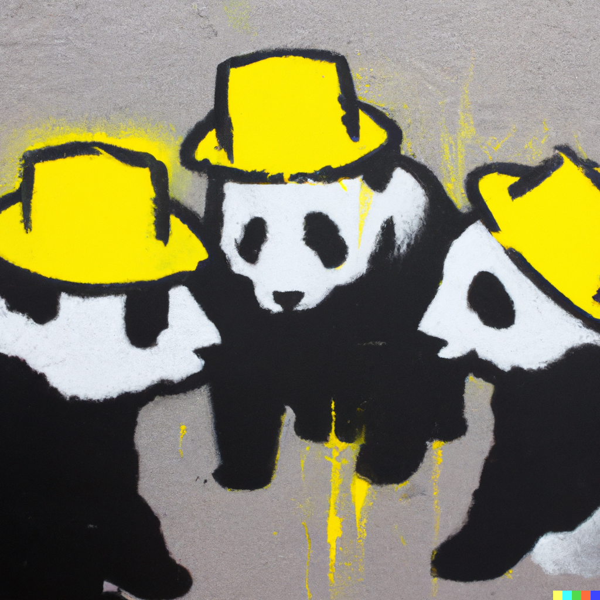
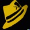
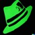
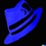

thinking hats…
Make your face to face collaboration yield more. The coloured thinking hats concept, created by Edward de Bono, uses six coloured hats to structure your thinking into different styles, each one is detailed below. Everyone in the room should be wearing the same hat at the same time (apart from the meeting coordinator who primarily wears the blue hat).
Example - if everyone is wearing the yellow hat to look for positives in a particular idea then the idea is more likely to be given room to grow as opposed to one person calling it out and another immediately saying why it's not possible and shutting it down.
Most collaborative meetings will use all of the hats at different points sometimes returning to a particular hat to dig deeper into a concept or idea.
The white hat: This hat is for neutral and objective information. It calls for data, facts, and statistics. When you put on the white hat, you focus on what you know, what you need to know, and how you might find the information you lack.
Yellow Hat: The yellow hat stands for positive thinking, optimism, and benefits. This hat encourages you to think about the value and benefits, the feasibility, and why something will work.
Black Hat: This hat encourages critical thinking. It focuses on the negatives, the devil's advocate position, the risks and why something may not work. It's not about being pessimistic, but rather cautious and careful.
Red Hat: The red hat symbolises emotions, feelings, hunches, and intuition. When you wear it, you express your emotions and feelings about the issue at hand without justification or explanation.
Green Hat: The green hat represents creativity, new ideas, possibilities, and alternatives. Wearing this hat, you're encouraged to think out of the box, propose new solutions, and see new perspectives.
Blue Hat: The blue hat is about control and organisation of the thinking process. It's the meta-hat that oversees the use of the other hats. It manages the thinking process, sets the agenda, and ensures the rules are followed.